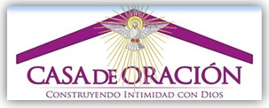
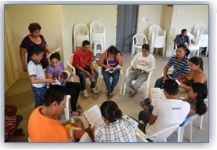

comprometidos con el mandato de Cristo
El Ministerio de Casas de Oración es parte del Área del Proceso de nuestra Parroquia. Y nuestro trabajo va orientado a la catequesis en los hogares en los que se imparten temas que van despertando a los hermanos y hermanas el deseo de conocer a Dios más profundamente. Estas casas de oración son seleccionadas durante la Misión evangelizadora que nuestra parroquia organiza anualmente. Cada casa de oración es animada por dos hermanos o hermanas que se han comprometido con la Misión que nuestro Señor Jesucristo ha encomendado a su Iglesia: "Vayan, pues, y hagan que todos los pueblos sean mis discipulos. Bauticenlos en el Nombre del Padre y del hijo y del Espíritu Santo. Y enséñenles a cumplir todo lo que yo le he encomendado a ustedes. Yo estoy con ustedes todos los días hasta el fin de la historia" Mt. 28, 19-20. Entonces, este es el compromiso de los animadores de las Casas de Oración que se han preparado en el Ministerio para este trabajo pastoral de nuestra Parroquia.
¿Quiénes pueden asistir a una Casa de Oración?
Cristo te invita a participar de su banquete

Así es una Casa de Oración
Si usted fue visitado durante la Misión Evangelizadora seguramente los Misioneros le invitaron a una casa de Oración. Pero, si usted no recibió las visitas pero le nace en el corazón estar en una casa de oración, puede hablar con los animadores del sector al que usted pertenece, y ellos le darán toda la información para que se pueda incorporar a una Casa de Oración. ¿Cuanto tiempo dura la Casa de Oración? El tiempo estimado de una reunión es de 1 hora y media, cada semana, según el día que se hayan puesto de acuerdo los animadoras con las hermanos que asisten a la Casa de oración. Y estaràn a proximadamente entre 5 a 6 meses reuniéndose.
¿Y después de todas las catequésis que sigue?
Es hora de tomar una decisión personal
Los hermanos y hermanas que han perseverado durante todas las catequésis de las Casas de Oración, pueden tomar una decisión muy personal donde deben decir si quieren hacer al Retiro Espiritual (que generalmente es durante los días de Semana Santa), para después formar parte de una "Comunidad Cristiana Católica" donde permanecerá hasta el tiempo que Dios decida. Aquí ya estamos hablando de ser discipulo permanente de Jesús.